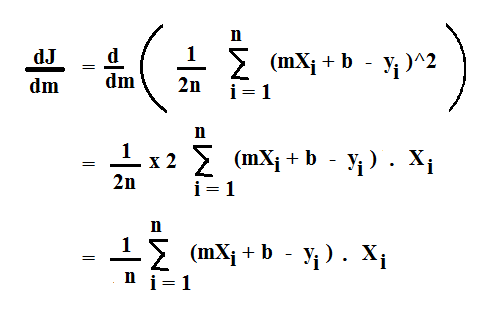
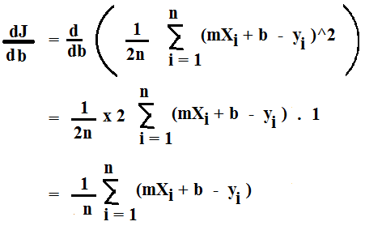
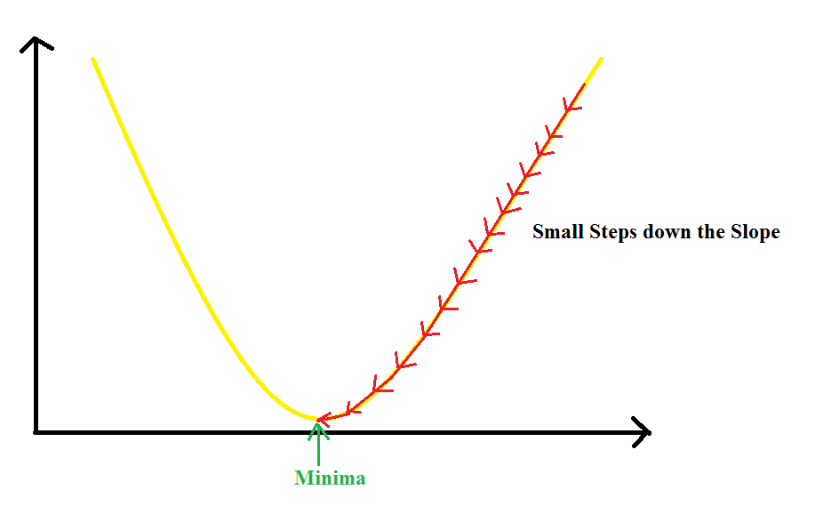
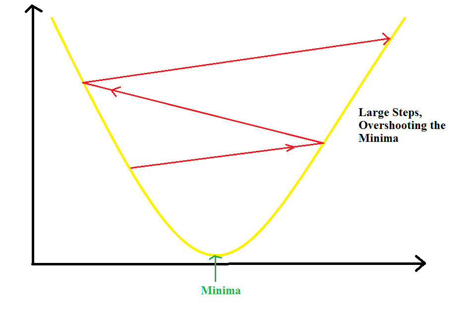

Hello Everyone !!
Thanks for continuing with this post.
In the last post, we discussed about the basics of Linear Regression, the theory and the mathematics behind it.
In this post, we will study oe of the most widely used optimization algorithms called Gradient Descent.
Gradient Descent:
Till now, we have talked about the error, mean, bias etc. But, what is the aim while calculating the error ?? Well, ofcourse we don't want it to increase. Who would want that !! We want to minimize/decrease the error.
But, the calculations that we have done till now are all hard coded and hence, there is no way to minimize the error or in other words optimize the model further. So, what can we do ??
Gradient Descent to the rescue.
So, what is Gradient Descent ?? Let's have a look at the definition. Wikipedia defines Gradient Descent as:
Gradient descent is a first-order iterative optimization algorithm for finding the minimum of a function. To find a local minimum of a function using gradient descent, one takes steps proportional to the negative of the gradient (or of the approximate gradient) of the function at the current point. If instead one takes steps proportional to the positive of the gradient, one approaches a local maximum of that function; the procedure is then known as gradient ascent.
So, Gradient Descent is a "first order" optimization algorithm that minimizes function. Wait a minute !! This is exactly what we want in the Linear Regression. We want to minimize the error function. But how does Gradient Descent minimize the error ??
Well you guessed it right !! It tunes the values of m and b such that the total error is minimized. This approach is better than the earlier approach because the values of m and b that we were hard coding earlier are now being tuned further to reduce the overall error and give a better "Best Fit Line".
Gradient Descent Working:
Let's get into the working of Gradient Descent Algorithm. Theoretically speaking, given a function defined by a set of parameters say, in this example m and b, Gradient Descent starts with an initial set of parameter values and iteratively tunes the values in order to minimize the given function. This iterative minimization is achieved by taking steps in the negative direction of the function gradient.

Let's understand it's working with an example. Assume that you are at the top of a hill. Your aim is to reach the bottom as fast as possible. So, how would you do that ?? Well, you would firstly, from a number of paths that you might see, choose the path with the largest steep and reach a new point. Then again you will have a number of choices and again you would choose the steepest choice to get down as fast as possible.
We do this process iteratively till we reach the bottom. This is the same way in which Gradient Descent works. Here, instead of the mountain, we have the cost function/error function which is formed using various values of m and b. Since, the error function we are using is a squared error, the plot of the cost/error is a Convex Function.

Hence, the aim of Gradient Descent here is to find the best values of m and b for which we reach the bottom of the Convex Function i.e. the point where the value of Cost Function is zero.
But, wait a minute. We have been talking about the Cost Function and minimizing it a lot. But what is the Cost Function ?? Do you remember the Squared Error in the last post which was given as:
Squared_Error = (sum(y_hat-y)^2)/2n
where, y_hat is the predicted values using m and b and y is the actual value. This value is divided by 2n to make the derivative easier.
This equation is our Cost Function.
This equation can be represented as a Convex Function as shown above. Hence, the aim of Gradient Descent is to minimize this cost till it becomes almost equal to zero. But where to start for that ??

Well we know that the derivative of the Cost Function can be represented as the slope of the curve of the Convex Function. And as we move downwards i.e. towards the lowest cost, the slope of the cost function decreases. This derivate which we calculate is called the Gradient.
So, if we keep updating the values of m and b as we move down the slope, then in the end we would be left with the values that show the least error. In other words, this means that, the line plot using these values will represent the "Best Fit Line" for the data points.
Gradient Calculation:
Till now we have seen the parts of Gradient Descent. Now let's calculate the Gradients and form the final equations.
The Cost Function is given as:
Cost Function [J] = sum(y_hat-y)^2
where,
y_hat = mx + b
where m and b are the calculated slope and the bias values.
Putting these values into the Cost Function, we get:
Cost Function = (1/2n) ((mx + b) - y)^2
Here, we have addeed (1/2n) to simplify the derivaties as taking derivative of x^2 results in 2x and dividing by 2 gives the value of x. Here, n is the number of input data points.
We need to take the derivative both w.r.t m and b. Hence, we get the following equations:
The derivative of J (Cost Function) w.r.t m is given as:

The derivative of J (Cost Function) w.r.t b is given as:

Now that we have got the derivatives, its time to update the values of m and b.
One quick Note. Do you remember the definition of Gradient Descent ?? It said that this technique is a first order optimization technique. Why first order ?? Because in this, we take only first derivative of the Cost function as we did above.
Now, To update the value of m, the equation is:
m := m - alpha * (dJ/dm)
and the equation to update b is given as:
b := b - alpha * (dJ/db)
where, alpha is called the Learning Rate.
You might think that why I have used ":=" instead of "=" in the update equations for m and b. Well, think of it this way. := means update the value after executing both the derivatives. But why ?? Because, if we update m before updating b, then we will not get the same value as the equation has now changed.
Here, we also introduced a new term, Learning Rate. So let's have a look at it.
Learning Rate:
We see that Learning Rate is used in the equations above where we update the values of m and b. But why use the learning rate ?? Why this extra parameter ??
You see that in the above equations, we subtract the derivative w.r.t each parameter and subtract it from that value. If we see these values in each iteration, they change far too much in each iteration, which can lead to an increase in the loss. So, multiplying the derivative with the learning rate helps avoid this increase in loss. Secondly, learning rate value also tells that how slowly or how fast you want to update the parameters.
So, can we take any value for Learning Rate ??
Well No !! If this value is too small, the parameters change less often or slowly. So, the Gradient Descent will take more time to converge.

If the learning rate is too large, the value of parameters will chnage by larger values and hence, we can overshoot the minima. So, it may completely fail to converge or diverge.

So, we have to choose this value very carefully. But how ?? Well, we can take a list of values and calculate the cross-validation error for each of these values. The value for which we get the smallest error can be used as our learning rate. We will study cross-validation later in detail.
Nowadays, there are various other optmimzation algorithms like Adam that decrease the learning rate as we move toward the local minima.
Another option can be to keep the Learning Rate as constant. Can we keep it as constant ?? Well yes !! But why ?? Because, as we move toward the local minima, the slope i.e. the value of derivative will decrease, hence, the parameters change less with decrease in slope. Hence, it leads to faster convergence. Note that the value of learning rate must be reasonable else it can lead to one of the two cases defined above.
Now that we have covered some of the basic concepts behind Linear Regression, I think its now time to write our first Machine Learning Algorithm in Code, i.e. Linear Regression.
Great work on completing this tutorial, let's move to the next tutorial in series, Introduction to Machine Learning: Linear Regression Code from Scratch
For more projects and code, follow me on Github
Please feel free to leave any comments, suggestions, corrections if any, below.
comments powered by Disqus